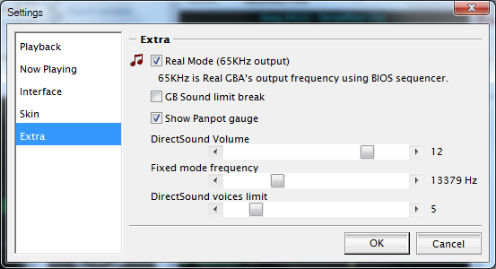

Settinges -> Extra 解説
Mod 7 よりプルダウンメニューの Options → Settings 内に Extra メニューを追加しています。

Real Mode (65KHz output)
チェックすると、通常 44.1KHz での再生するところを 65KHz で再生します。
CPU 能力に余裕がある場合に使ってみてください。折り返し雑音が気になる場合に解消するかもしれません。標準では OFF です。
GB Sound limit break
各音源(Square1, Square2, Wave, Noise, Direct)の発音限界を解除して、シーケンスデータをできるだけ忠実に再生します。
これにより、出力が Square1 なのに 2 音出てたり、複数トラックで同時に Square2 が使われていたり等、実際には同時に鳴らない音のチェックが行えます。
なお、 ON にすると Square1 の Sweep が無効になります。
また、標準では無視されている Drum, Multi での無効ノートがメイン画面上に表示されるようになります（実際には音は鳴りません）。その場合音色表示部に「----」が表示されます。
Show Panpot gauge
これを有効にすると、トラックのボリュームメータの表示に重ねてパンポットのゲージが表示されるようになります。
チェックしない場合、メイン画面のトラック表示を畳んだ状態がほぼオリジナルと同じになります。
DirectSound Volume
GBA で実装された音源、通称 DirectSound の音量を設定します。標準では 12 です。
この音量はゲーム内でプログラムが GBA のシーケンサに指定するもので、各ゲームごとに、制作者が自由に設定しています。正しい音量を設定しないと GB 由来の音源とのバランスが悪くなります。
Fixed mode frequency
周波数固定の音色で使用する再生周波数を指定します。標準では 13379 Hz です。
DirectSound Volume と同じく、各ゲームごとに DirectSound 用のサンプリング周波数をゲーム制作者が自由に設定しています。この設定が実際のゲームの設定と違う場合、ドラム等の周波数固定で使用している音が正しく鳴りません。
DirectSound voices limit
Direct Sound の同時発音数を設定します。標準では 5 で、 1〜28 まで設定可能です。
各ゲームの制作者によって、この発音数は 1〜12 まで自由に設定ができます。ゲームにあった設定をすることで、より実際にゲーム中で聞こえる状態に近づけることができます。
なお、DirectSound Volume と Fixed mode freqency 、 DirectSound voices limit の標準設定は○ケモン系の設定に合わせています。